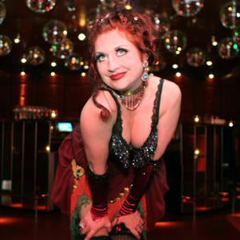
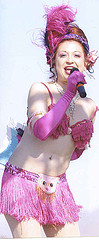
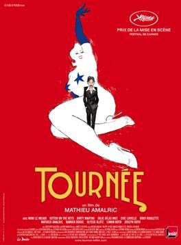

Kitty Bio
Suzanne Ramsey aka Kitten on the Keys… recently performed with Cabaret New Burlesque in French film "TOURNEE" with award winning actor and director Mattieu Almaric (2010). The film was an official entry at the 63rd Annual Cannes Film Festival where it won a best director Palme D'or for Mattieu Amalric's Directing and the Foreign Press Award. Kitten was pleased as punch to walk the red carpet with Mi Mi le Meaux, Evie Lovelle, Dirty Martini, Julie Atlas Muz, Roky Roulette and Mattieu Amalric and the rest of the cast.
Kitten was pictured in the Sunday NY TIMES ! WOW! Kitten has several of her ukulele and piano tunes on the film's soundtrack which is available on Amazon.com and iTUNES.fr
She was the guest of honor at the First Paris Burlesque Festival , had a full page article in UK Bizarre Magazine, and was awarded a BEST OF THE BAY Award for singing and songwriting by the San Francisco Bay Guardian all in 2009!
Kitten and the cast of Kitty Hartl's Cabaret New Burlesque return to le lieu unique in Nantes France October 12-14 and back to Europe in December and January 2011.
You can find Kitten on the Keys in a variety of media outlets, performing with various Bay Area Circus Troupes and Cabaret groups , playing in several bars and restaurants, posing for a variety of artistic photographers and can download her CD's on CDBABY.com. or iTUNES.
Known as Kitten on the Keys, Suzanne Ramsey has been seen on E!, HBO,IFC, NBC, Queer TV, Bravo, MTV and on countless French and Italian TV shows. She embodies the spirit and style of those days of decandence gone by. Pianist,singer and Mistress of Ceremonies - expect a racy ragtime romp when this little kitty sharpens her claws on a meow mix medley of mad cap gems from yesteryear with a naughty whimsical edge.
She's toured the US and Canada with Devotchka and Catherine D'Lish,
opened for legendary punk band THE DAMNED on the Twisted Cabaret Tour UK 2007, toured with the Teaseorama Roadshow, performed sold out shows in FRANCE, Netherlands, Finland, Italy, Edinburgh Scotland, Switzerland, played piano for Jazz Legend Little Jimmy Scott in Las Vegas, MC'd for Exotic World and the Burlesque Hall of Fame, played the Spigeltent at Outside Lands Fest in San Francisco, sang her original songs with a jazz band and MC'd The New Orleans Burlesque Fest , and has a one woman show to boot!

HEADSHOT/FILMS
<